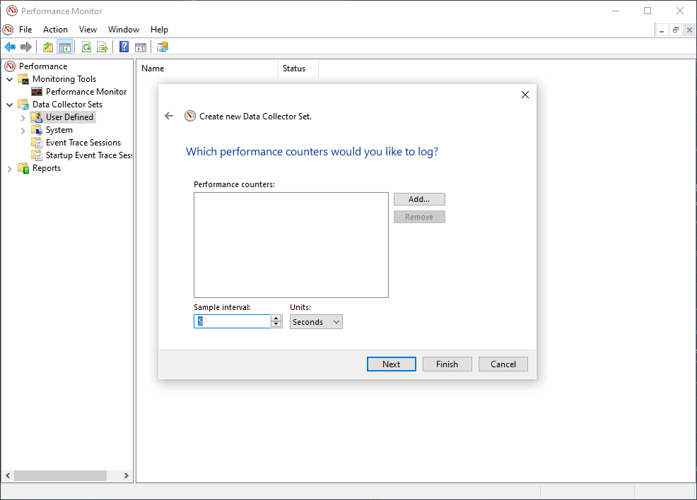
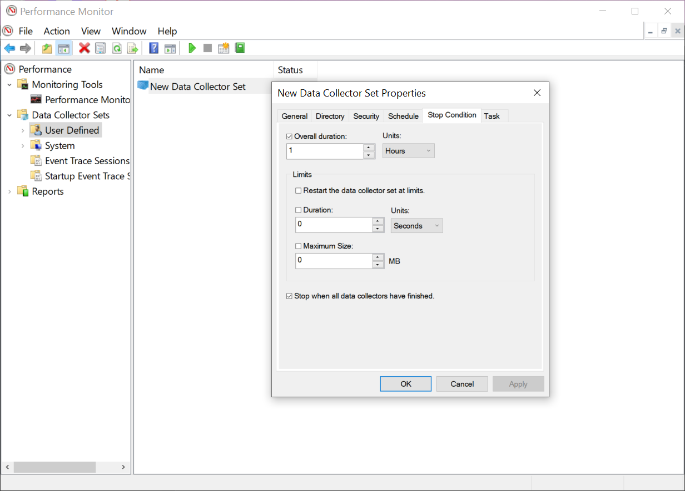
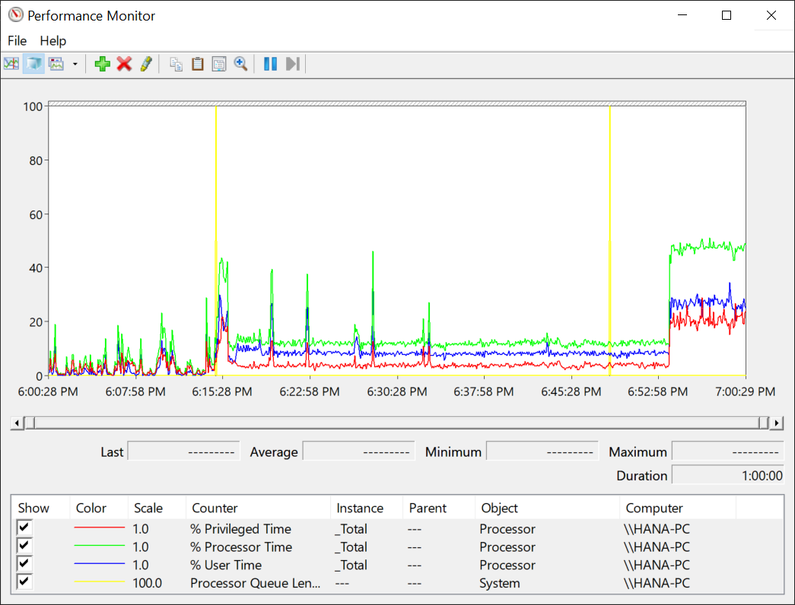

تحلیل مصرف منابع سیستم
Performance Analysis — ثبت و تحلیل مصرف CPU با Performance Monitor و ارائه نمودار.
01 / هدف مأموریت
هدف این پروژه، ثبت مصرف پردازنده (CPU) در بازهی یک ساعت و تحلیل نمودار آن است. با این کار الگوی مصرف CPU، زمان و شدت اوجها، سهم کد کاربر و کد کرنل در مصرف و وجود یا نبود گلوگاه پردازنده مشخص میشود. تفاوت این پروژه با بررسی لحظهای در Task Manager این است که دادهها در یک فایل لاگ ذخیره میشوند و بعداً قابل مرور و تحلیلاند.
02 / ابزارها و محیط اجرا
Performance Monitor (perfmon): ابزار داخلی ویندوز برای نمایش نمودار شمارندههای عملکرد، هم بهصورت زنده و هم از روی فایل لاگ.
Data Collector Set: قابلیت ثبت خودکار شمارندهها در فایل لاگ (فرمت Binary با پسوند blg) با فاصلهی نمونهبرداری و زمان پایان مشخص.
شمارندههای ثبتشده:
- Processor → % Processor Time (_Total): درصد کل مصرف پردازنده.
- Processor → % User Time (_Total): سهم مصرف مربوط به برنامههای کاربر.
- Processor → % Privileged Time (_Total): سهم مصرف مربوط به کرنل و درایورها.
- System → Processor Queue Length: تعداد رشتههای منتظر نوبت پردازنده؛ نشانهی گلوگاه CPU.
تنظیمات ثبت: فاصلهی نمونهبرداری ۵ ثانیه (حدود ۷۲۰ نمونه در یک ساعت) و مدت ثبت ۱ ساعت.
مشخصات سیستم: Intel(R) Core(TM) i7-6600U CPU - 8.00 GB (7.41 GB usable) - Windows 10 pro
03 / مراحل اجرا
- اجرای ابزار: با فشردن Win + R و وارد کردن عبارت perfmon، Performance Monitor را باز میکنیم.
- آشنایی با نمای زنده: در بخش Monitoring Tools ← Performance Monitor با کلید Ctrl + N شمارندهی Processor ← % Processor Time را اضافه میکنیم تا نمودار زنده را ببینیم. این نمای زنده فقط چند دقیقهی اخیر را نشان میدهد و ذخیره نمیکند.
- ساخت Data Collector Set: در Data Collector Sets ← User Defined راستکلیک کرده و یک Data Collector Set جدید میسازیم (ساخت دستی، نوع Performance Counter).
- افزودن شمارندهها: چهار شمارندهی بخش قبل را با گزینهی Add اضافه میکنیم و Sample interval را روی 5 و واحد را روی Seconds میگذاریم.
- تعیین زمان پایان: در Properties مجموعه، تب Stop Condition، گزینهی Overall duration را روی 1 Hours تنظیم میکنیم تا ثبت بهصورت خودکار پس از یک ساعت متوقف شود.
- شروع ثبت: مجموعه را با گزینهی Start اجرا میکنیم و یک ساعت سیستم را بهصورت عادی استفاده میکنیم (از حدود ساعت ۶:۰۰ تا ۷:۰۰ بعدازظهر).
- بررسی نتیجه: پس از پایان ثبت، فایل لاگ را در Performance Monitor باز میکنیم، نمودار و مقادیر Average، Minimum و Maximum را بررسی میکنیم و تصویر میگیریم.
04 / یافتهها و تحلیل فنی
مقادیر جدول زیر بهصورت تقریبی از روی نمودار یکساعته خوانده شدهاند و برای اعداد دقیق باید Average، Minimum و Maximum هر شمارنده از Performance Monitor مشاهده شود.
| بازهی زمانی | % Processor Time (تقریبی) | User / Privileged (تقریبی) | وضعیت |
|---|---|---|---|
| ۶:۰۰ تا حدود ۶:۱۵ | زیر ۱۰٪ با نوسان تا حدود ۲۰٪ | هر دو پایین | مصرف پایین و ناپایدار |
| حدود ۶:۱۵ تا ۶:۵۳ | حدود ۱۰ تا ۱۳٪ با اوجهای کوتاه تا حدود ۳۵ تا ۴۶٪ | حدود ۸ تا ۹٪ / حدود ۳ تا ۴٪ | سطح پایدار با اوجهای دورهای |
| حدود ۶:۵۳ تا ۷:۰۰ | حدود ۴۵ تا ۵۰٪ | حدود ۲۵ تا ۳۰٪ / حدود ۲۰ تا ۲۵٪ | جهش و ماندگاری روی سطح بالاتر |
آمار کل ثبت: Average = 14.88٪ · Minimum = 0٪ · Maximum = 51٪ (برای % Processor Time)
- مجموع % User Time و % Privileged Time تقریباً برابر % Processor Time است (مثلاً حدود ۸ + ۴ ≈ ۱۲ در بازهی دوم)، که با تعریف این شمارندهها سازگار است.
- در بازهی آخر، علاوه بر User Time، سهم Privileged Time هم بهطور محسوسی بالا رفته و تقریباً نصف مصرف مربوط به کد کرنل و درایورهاست. این الگو معمولاً با فعالیتهایی مانند عملیات سنگین فایل و شبکه، اسکن آنتیویروس یا آپدیت همراه است.
- علت جهش حدود ساعت ۶:۱۵ و ۶:۵۳: مشخص نیست
- خط Processor Queue Length فقط در چند لحظهی کوتاه بالا میرود و بیشتر زمان نزدیک صفر است. چون صف پایداری وجود ندارد، گلوگاه CPU مشاهده نشد. Scale این شمارنده روی نمودار ۱۰۰ است و ارتفاع خط با مقدار واقعی تفاوت دارد؛ Maximum واقعی: 1.000
- اوجهای تیز بازهی دوم با فاصلهی چند دقیقه تکرار میشوند و کوتاهاند، که با کارهای دورهای پسزمینه سازگار است. منبع دقیق آنها از روی این نمودار مشخص نمیشود و نیاز به بررسی در Task Manager یا Resource Monitor دارد.
05 / مشکلات و راهحلها
| مشکل | راهحل |
|---|---|
| نمودار خالی بود و مقادیر Last/Average/Maximum بهصورت خطتیره نمایش داده میشدند | هیچ شمارندهای اضافه نشده بود؛ با کلید Ctrl + N شمارندهها اضافه شدند |
| اجرای Data Collector Set نموداری نشان نمیداد | این ابزار فقط داده را در لاگ ذخیره میکند؛ نمودار پس از پایان ثبت از طریق Reports یا باز کردن فایل لاگ دیده میشود. شمارندههای مجموعه هم جدا از شمارندههای نمای زنده هستند |
| نمای زنده فقط حدود یک و نیم دقیقه را نشان میداد | برای ثبت یک ساعته از Data Collector Set با Stop Condition استفاده شد |
| شمارندهی % Processor Time دو بار اضافه شده بود (از Processor و از Processor Information) و خطها روی هم میافتادند | نسخهی تکراری حذف شد و فقط شمارندهی آبجکت Processor نگه داشته شد |
| مقدار Processor Queue Length با Scale دیگری رسم میشد و ارتفاع خط با مقدار واقعی فرق داشت | با توجه به Scale شمارنده در تفسیر نمودار، و برای عدد دقیق از فیلدهای Average و Maximum استفاده شد |
06 / تصاویر مرحله به مرحله




07 / جمعبندی و آموختهها
در این پروژه مصرف CPU بهمدت یک ساعت با Data Collector Set ثبت و در Performance Monitor بررسی شد. مصرف در بخش بزرگی از زمان پایین یا متوسط بود، با اوجهای کوتاه و یک جهش پایدار در دقایق پایانی که سهم کد کرنل در آن بالا رفت. صف پردازنده پایدار نبود و گلوگاه CPU دیده نشد.
مهمترین آموختهها: تفاوت نمای زنده با ثبت بلندمدت، ساخت و زمانبندی Data Collector Set، انتخاب فاصلهی نمونهبرداری مناسب، تفسیر شمارندههای User Time، Privileged Time و Processor Queue Length، و توجه به Scale شمارندهها هنگام خواندن نمودار. این مهارتها در عیبیابی سیستمهای کند و گزارشدهی مستند کاربرد مستقیم دارد.